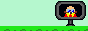

Speccy Adventure was a singleplayer TGF gamemade in 2022. It was lost alongside many other projects, but I have started work on remaking it.It'll still be singleplayer, but the game will be expanded upon with new zones and gimmicks as I work on it.You can download it here: 
Screenshots
SpDOOM (older version)